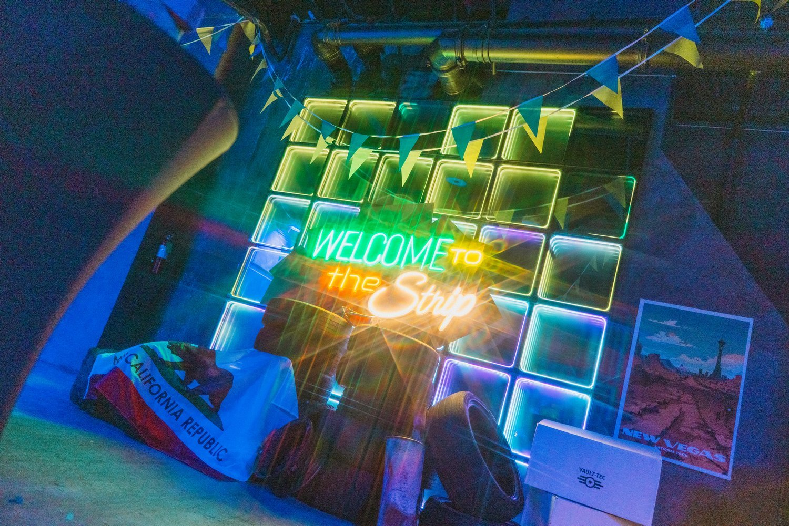
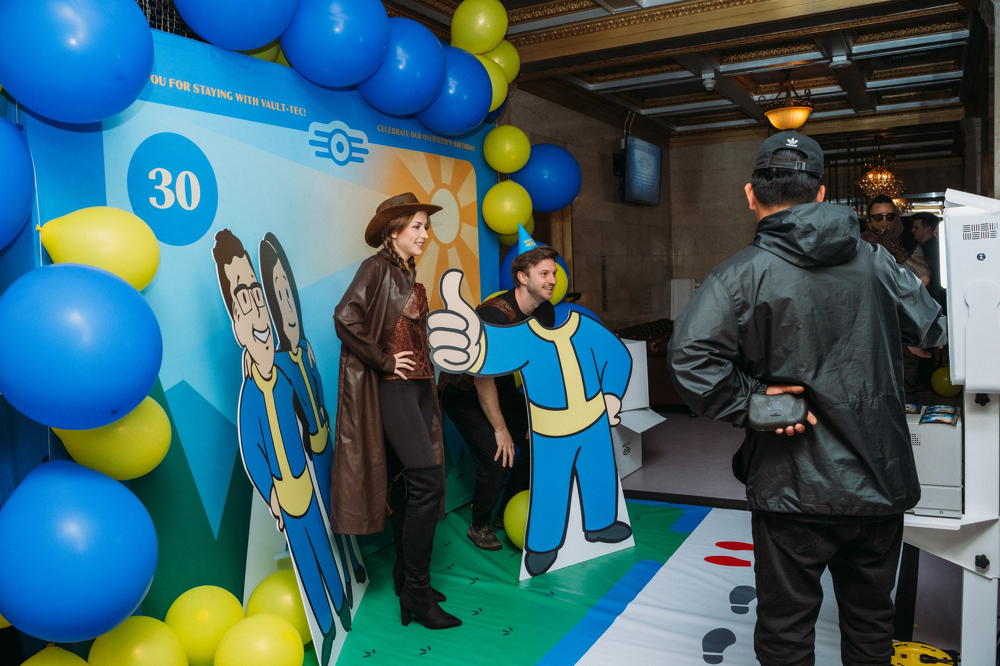
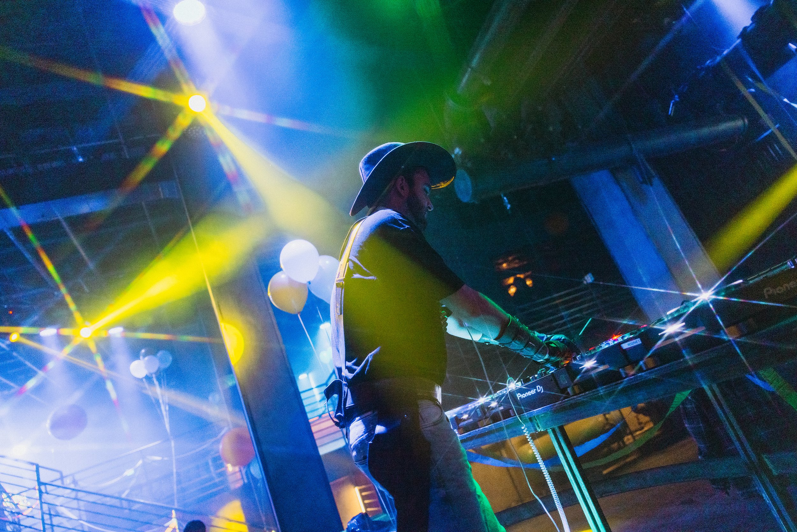
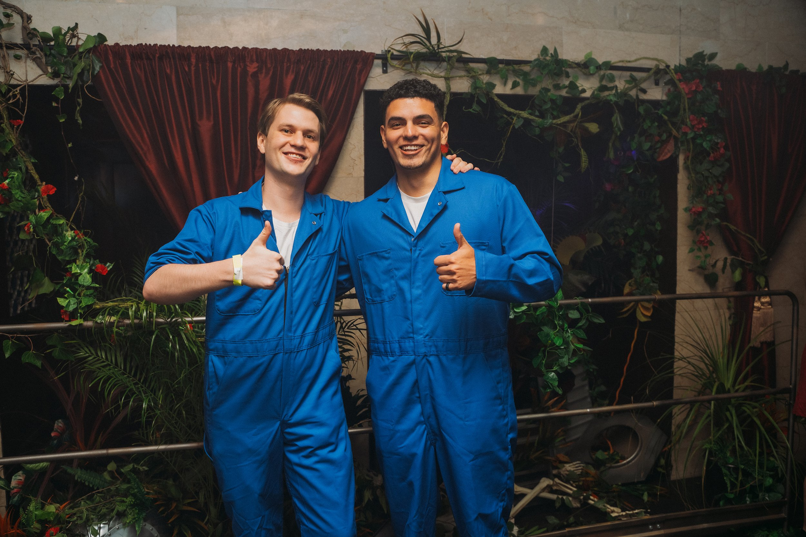
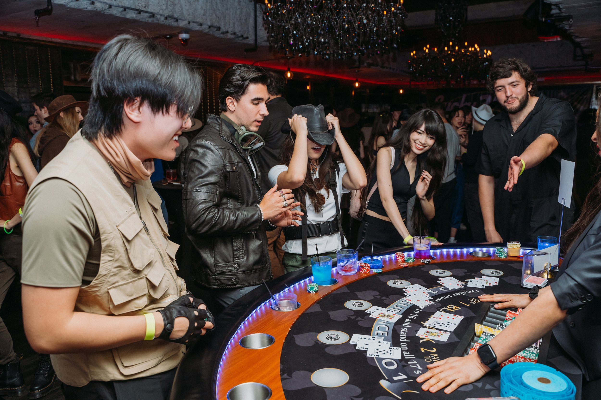
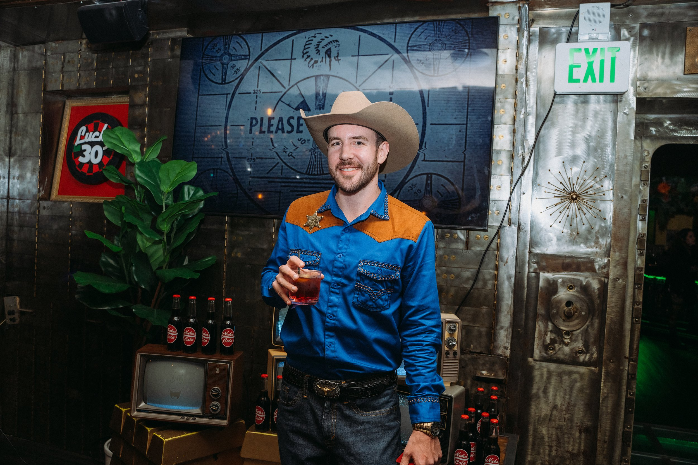
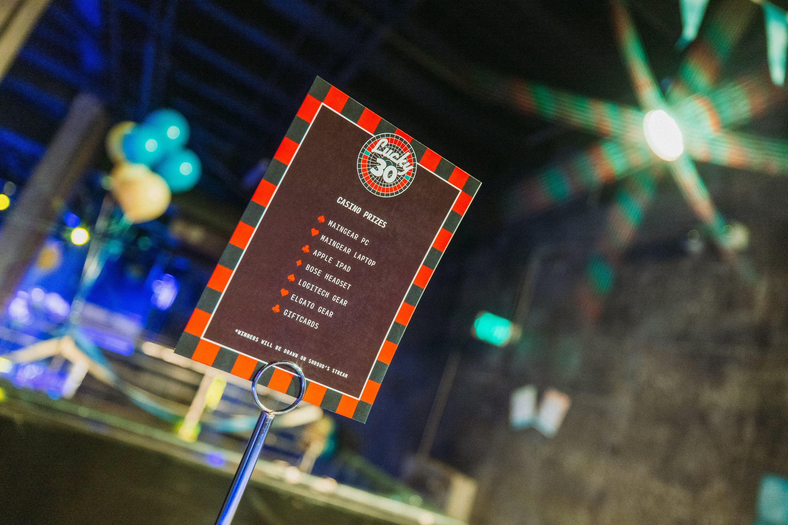
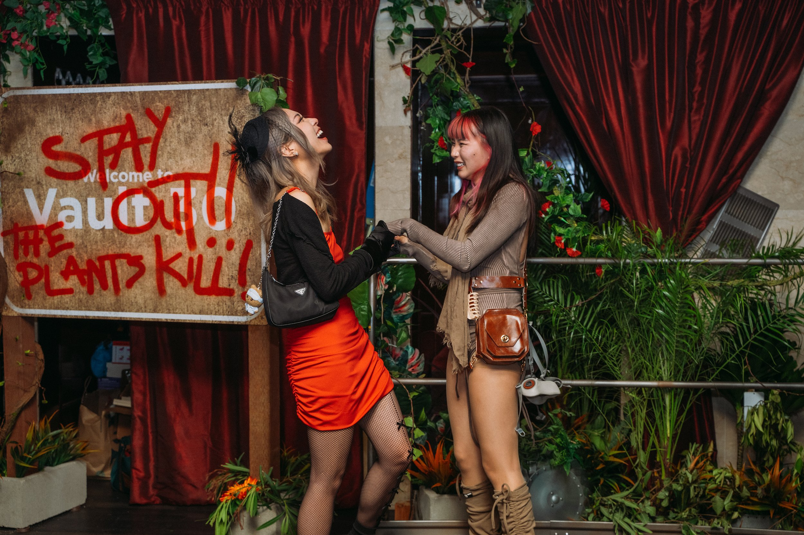
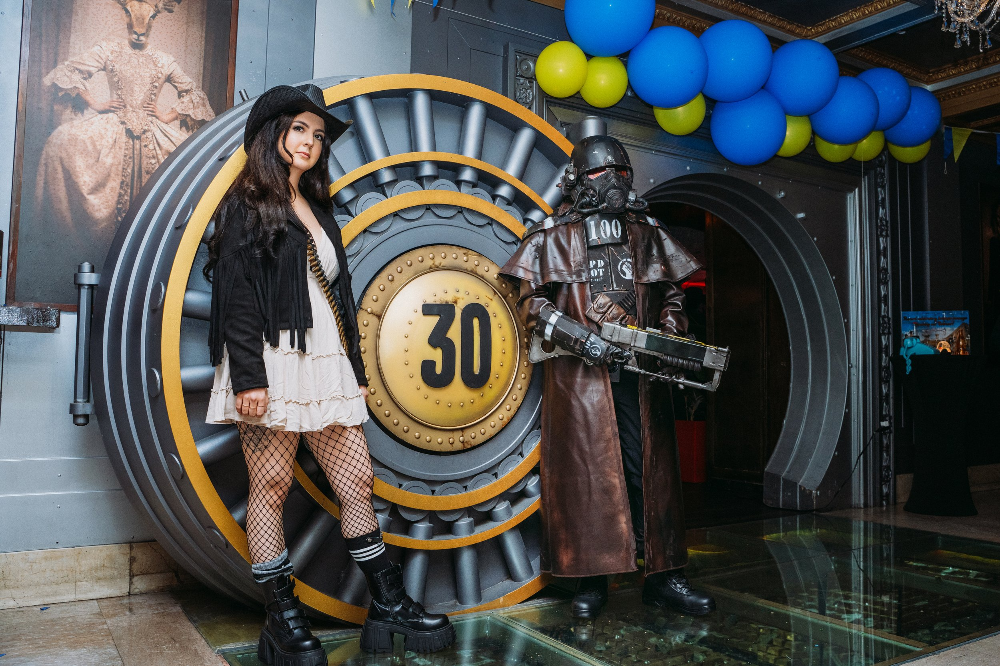

Fallout Popup
Client: Loaded, Shroud
Year: 2024
Role: Immersive Event Design | Thematic Production | Spatial Design
Loaded and Shroud partnered with Frenzy to celebrate his 30th birthday inspired by Fallout: New Vegas. The creative direction focused on capturing the unmistakable tone of New Vegas: a surreal collision of retro Americana, lawless frontier energy, and irradiated glamour. Every detail—from the flicker of a broken neon sign to the poker chips scattered on rusted tables—was designed to transport guests into a living tribute to the game. Shroud’s closest friends, collaborators, and fans experienced a world built just for him—crafted with care, fan knowledge, and environmental storytelling. It wasn’t just a birthday. It was a narrative-driven celebration that honored a world he loves.
We built a Strip where the bottle caps clinked, the slots spun, and the lore ran deep.
Lighting & Signage
A custom-built façade glowing with broken neon, rusted signage, and NCR graffiti made an unforgettable first impression, setting the tone for the night. Working closely with the event space, we coordinated spotlights and lighting throughout the venue to mirror the iconic blue and yellow hues of Fallout’s Vault Boy, further immersing guests into the game’s world.
Photo Op
For Shroud’s Fallout: New Vegas–themed birthday, we knew the photo moment had to feel personal, playful, and pulled straight from the Wasteland. Enter: the Vault-Tec Photo Booth—a nostalgic, tongue-in-cheek installation built to capture the spirit of Fallout with a custom twist that celebrated both Shroud and Bnans.
Set against a bright, lore-accurate Vault-Tec backdrop, the photo booth featured life-sized standees and interactive cutouts, styled like a vintage recruitment ad gone radioactive. To add an extra layer of personalization, we created an in-theme graphic overlay to print atop each photo for the event.
A vault opens. The Strip glows. The Mojave comes alive—for one night only.
Prints & Video Assets
We built a world full of retro-futuristic detail: custom casino-style prize sheets, a flickering radioactive drink menu, and looping glitchy video assets. We also designed Nuka-Cola bottle labels and a giant hanging “Lucky 30” banner to celebrate the birthday boy in true wasteland style.
In-World Props & Fabrication
In-world props and custom fabrication included 14 security deposit boxes repurposed into unique display cases filled with Nuka Cola, a hand-crafted wooden Bison Steve sign, a dilapidated Vault 22 street sign, hand-drawn Easter egg notes, and a fully-wired CRT wall that added nostalgic charm. Each piece was meticulously painted, carved, constructed, and decorated by our team, ensuring every detail contributed to the authentic Fallout-inspired environment.










Produced in Collaboration with Loaded In House Team, Shroud & Bnans